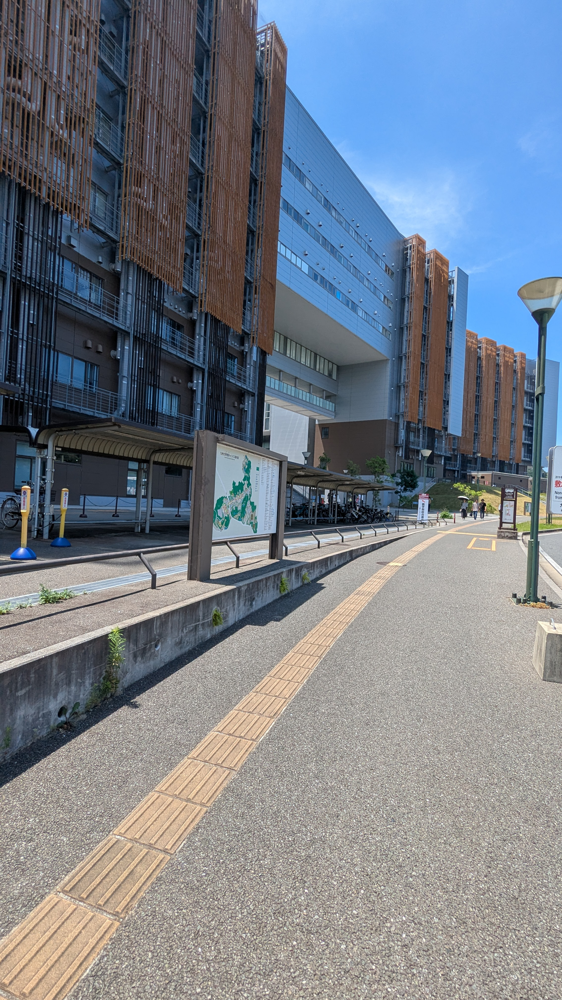

↓こんな感じのキャンパスでした↓

適当に写真を撮って生きたので見えにくいですが、
これが伊都キャンパスです！
電車の改札に二回くらい弾かれたり、
特急で乗車位置ミスって40分立ちっぱだったり、
電車の椅子に座るタイミング逃して
行き帰りの約1時間立ちっぱだったりしましたが、
全体的に見ればまあまあいい遠出でした。
まあカップルとか友達グループとか見て
だいぶ精神削られましたけどね！！！！！！！
もう独りも慣れたもんですよ。長いことだし。
電車の途中で目の前にカップルが来たときは
こいつらどっちか殺してやろうかくらいに
思ってましたが、何とか抑えましたよ。
まあ第一に武器持ってないですしね。
ん？じゃあ武器持ってたらやってたのか、って？
...人には秘密があったほうが面白いんですよ。
まあ最後に○○○○○○○○○○○○○○○○○○○！！！！！
あっ伏字が。危ない危ない。
ていうか今日8時過ぎに家出たはずなのに
帰ってきたの17時とかだったんですよね。
しかも人めちゃくちゃ多かったし.....
なんなら夏季補習中より疲れましたよ。
ていうか独りだったせいで楽しくなかったし。
いちゃつくカップルを見ながら知らん地で独りで
オープンキャンパスに行くって最悪ですよ。
おまけに駅から30分自転車で帰りましたからね。
あー最悪ですよこんな世の中なんて。(突然)
僕の左手の薬指には日焼け跡なんて一生
つきそうにないですね。
まあ僕の目に焼き付いたあの日々は一生
消えることもないですが。(突然の詩)
前も書きましたが僕は人生で夏祭りに
行ったことがないんですよね。
建前では建前から外出たくないんですが、
本音では行ってみたくはあるんですよね。
ただ行く相手もいないし、暑いし、課題多いし。
まあ完全に行くべき時を逃したってことですね。
こんなクソ暑い中でも恋人とかいたら
楽しいもんなんですかね？
恋人いない歴 = 人生なので何もわかりません。
前から言ってるんですが僕は普通になりたいん
ですよね。別に秀でてなくていいんで。
ただ○○○○○でいたい、それだけです。
根が異常なんで無理ですが。
そもそもこんな遺伝子後世に残したところで
人類退化するだけですよ。ほんとに。
またネガティブ日記になっちゃった。
今日こそは楽しく終わろうと思ってたのに～...
まあ日記って本当の自分を書き出すもんなんで
何も間違ってはいませんね。
ちなみに明日は何の予定もないです。
明後日のボウリングに向けてやる気でも養うか。
そもそもあんま行きたくないんだけど、
○○○○○○○○○○○○○○○○○○。じゃ、おやすみなさい。